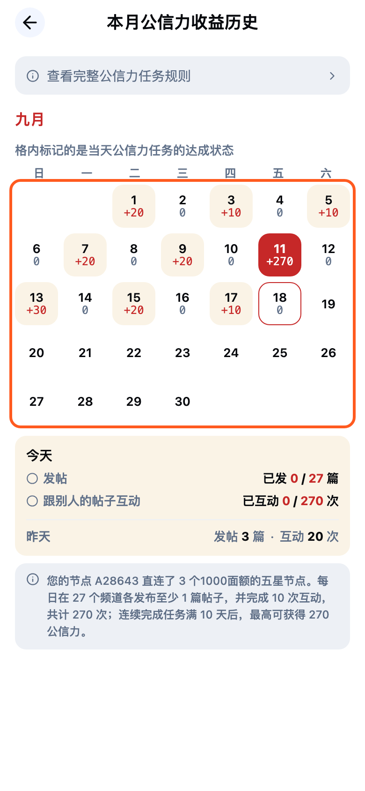
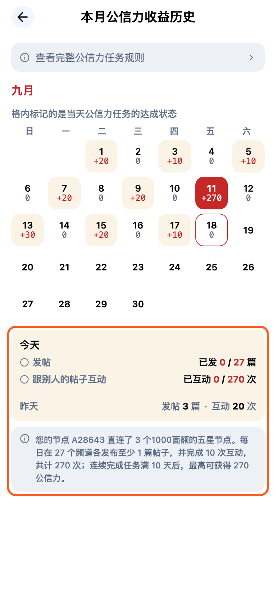
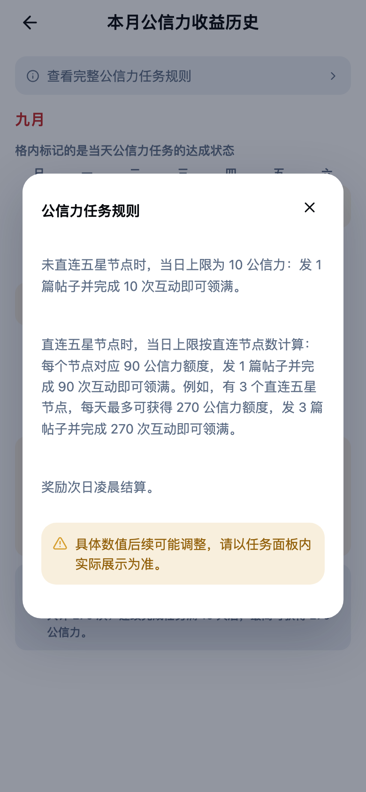

屏 1
首页入口改动
- P0 首页
- 入口位置和图标不变；今天还有未达成的公信力奖励时显示红点
- 点击后进入独立页面，替代原来的底部弹窗
开发注意
- 未连接钱包时先弹钱包连接，连接成功后自动进入任务页

屏 2
公信力任务页新增
- P0 首页
- 公信力任务图标
- P_LOT_TASK
- 标题「本月公信力收益历史」，左上角返回回到来源页
- 顶部保留「查看完整公信力任务规则」入口
- 日历格内显示当天是否达成与当日收益（+数值 / 0），仅展示、不可点击
开发注意
- 页面走路由栈，和其它二级页一样支持返回；原底部面板组件已删除

屏 3
今天进度、昨天记录与规则摘要新增
- P_LOT_TASK
- 日历下方
- 今天卡片列出「发帖 已发 x / 要求篇数」和「跟别人的帖子互动 已互动 x / 要求次数」，达成项图标和数字变绿
- 卡片内附昨天一行：发帖 x 篇 · 互动 x 次
- 今天没有任何记录时显示「暂无任务完成记录」
- 规则摘要按直连五星节点数切换文案：有直连节点时写明节点编号、面额、频道数与总互动次数；没有时写基础要求，并提示直连五星节点可解锁更高上限
开发注意
- 要求篇数 = 直连五星节点数对应的任务组数；要求互动次数 = 组数 × 每组互动数
- 演示数据为直连 3 个五星节点

屏 4
完整规则面板改动
- P_LOT_TASK
- 查看完整公信力任务规则
- 从任务页顶部入口打开，居中弹窗展示，点背景或右上角关闭
- 分别说明未直连和直连五星节点时的每日上限，以 3 个节点举例